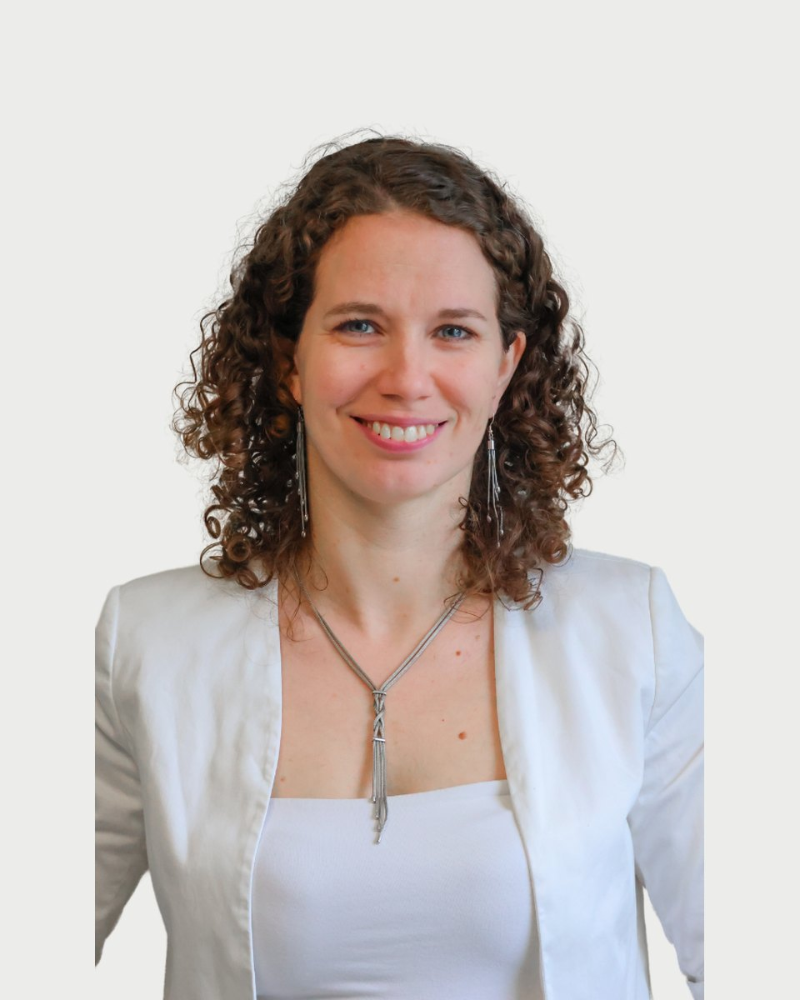

Regiszter 09 · Pszichológus
Dr. Tóth-Vajna Rita
- Amiben segít
- Önismeret fejlesztés, önbizalom, önértékelés
- Életvezetés, határtartás, munka-magánélet egyensúly
- Párkapcsolati problémák, szakítás, válás, szingliség
- Családi kapcsolatok, szülőség
Amiben segítek
Dr. Tóth-Vajna Rita saját megfogalmazásában. Ha a listában nem találja a saját helyzetét, az első beszélgetésen ezt is megbeszélik.
- Önismeret fejlesztés, önbizalom, önértékelés
- Életvezetés, határtartás, munka-magánélet egyensúly
- Párkapcsolati problémák, szakítás, válás, szingliség
- Családi kapcsolatok, szülőség
- Gyerekvállalás és nehézségei
- Baráti, kapcsolati problémák
- Munkahelyi konfliktus, karrier
- Teljesítmény, motiváció, célok
- Változások feldolgozása
Bemutatkozás
Dr. Tóth-Vajna Rita saját szavaival. Egy alkalom díja 15-20 ezer forint. A díjakról
Örülök, ha segítségére lehetek. A mai világban a segítségkérést sokszor a gyengeség jelének veszik, én viszont pont a lehetőséget látom benne a fejlődésre.
Szerintem nagyon bátor dolog felismerni, hogy olyan helyzetben vagyunk, hogy szükségünk van másnak a segítségére, hogy jobban tudjuk megélni, értelmezni, végül reagálni az életünk adta feladatokra. Társadalomban élünk, rengeteg közösségben, legyen az a munkahelyünk, a családunk vagy a barátaink. Mindegyik körben más szerepeink és faladataink vannak. Mindezeket a többi embertársunkkal, más-más személyiséggel próbáljuk megoldani, melyeket, ha sikerül boldogságban összeegyeztetni, az egy csoda. Hiszem, hogy szükségleteink, érzelmeink és kommunikációnk mélyebb megértésével és másokkal folytatott őszinte megbeszélésével javíthatunk kapcsolatainkon. Munkám során ezekben az önismereti, életünk adta nagy kérdések kibogozásával tudok segíteni a hozzám forduló embereknek. Legyen szó munkahelyei, egyéni életutunk során felmerülő vagy családi, párkapcsolati problémáról szívesen segítek közösen átgondolni a mögöttes jelentéseket és egy elég jó megoldásra törekedve megtervezni a következő lépéseket.
Sokszor kívánjuk, hogy bárcsak jönne varázsütésre egy megoldás, ami minden problémán átsegít. De néha épp ezek a gondok és a küzdelmeink kényszerítenek bennünket arra, hogy szembenézzünk önmagunkkal, időközben pedig jobban megismerjük magunkat, megerősödjünk, és meglássuk az életben az igazán értékes dolgokat. Így pedig új szemmel tekinthetünk a világra." James Norbury
Dr. Komlósi Piroska, klinikai szakpszichológus, kiképző pár- és családterapeuta, szupervízor
Dr. Martos Tamás -egészségpszichológiai szakpszichológus, pár- és családterapeuta, egyetemi tanár
Dr. Kárpáti Gyöngyvér, Individuálpszichológiai képző szakpszichoterapeuta
Böszörményi-Nagy Iván
Viktor Frankl
Carl Rogers
Donald Winnicott
Képzés és szakmai út
18 tétel. A képzések és a szupervízió az akkreditált szakképzőhely rendjében folynak. Mit jelent ez Önnek
Iskolai végzettség
Módszerspecifikus képzések
Szakmai tapasztalatok
Regiszter 09
Időpont Dr. Tóth-Vajna Ritanál
Az ügyfélszolgálat hétköznap 9 és 15 óra között egyeztet. Ha bizonytalan, hogy Ön kihez tartozik, azt is megbeszélik, és ha kell, más kollégát javasolnak.